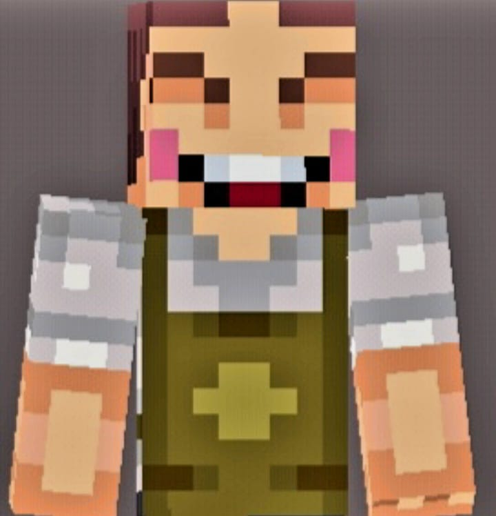

Quienes Somos
Pues Primero que nada somos los organizadores o programadores de esta pagina sobre el Estado de Michoacan esta pagina habla sobre este Estado, que Platillos tiene, Como es y como se visten la gente de este Estado, Que Costumbres o Tradiciones se Realizan y Que lugares Historicos tiene.